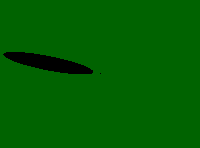

Calculating Shadows
from Wind Turbines
Daily Shadow Variation - Worst Case
 This simulation
of shadow casting shows how the rotor shadow moves (worst case) from sunrise
to sunset on a particular day at a certain location on the globe. The image
is seen directly from above, with the centre of the wind turbine tower placed
at the tiny black dot in the centre. The shadow positions are shown for
every half hour during the day. Shadows, of course, are long around sunrise
and sunset, and short at noon.
This simulation
of shadow casting shows how the rotor shadow moves (worst case) from sunrise
to sunset on a particular day at a certain location on the globe. The image
is seen directly from above, with the centre of the wind turbine tower placed
at the tiny black dot in the centre. The shadow positions are shown for
every half hour during the day. Shadows, of course, are long around sunrise
and sunset, and short at noon.
 This particular set of images was made for 55° Northern latitude
for 21 September, assuming a 43 m rotor diameter on a 50 m tower, using
the shadow simulation programme on this web site.
This particular set of images was made for 55° Northern latitude
for 21 September, assuming a 43 m rotor diameter on a 50 m tower, using
the shadow simulation programme on this web site.
 Doing a worst case simulation we assume that the rotor yaws so as to
track the movement of the sun exactly. This is is equivalent to assuming
that the rotor is a solid balloon (or a Darrieus
turbine).
Doing a worst case simulation we assume that the rotor yaws so as to
track the movement of the sun exactly. This is is equivalent to assuming
that the rotor is a solid balloon (or a Darrieus
turbine).
Map
of maximum (worst case) shadows around a 600 kW wind turbine placed at 55
degrees Northern latitude. The turbine has a 43 m rotor diameter and a 50
m tower. The map is 1200 m wide (East - West) and 750 m in the North - South
direction. The map was computed using the Wind Turbine Shadow Calculator
on this web site.
Annual and Daily Shadows - Worst Case
 This map shows how shadows are typically distributed around a
wind turbine throughout a year, assuming a worst case direction of the rotor.
You will notice a number of kidney-shaped or bell-shaped areas around the
wind turbine in the centre of the map. Each of the grey areas represents
a certain maximum number of minutes of shadow from the wind turbine rotor.
Since this map was computed for 55 degrees latitude in the Northern hemisphere,
there is no shadow South of the turbine.
This map shows how shadows are typically distributed around a
wind turbine throughout a year, assuming a worst case direction of the rotor.
You will notice a number of kidney-shaped or bell-shaped areas around the
wind turbine in the centre of the map. Each of the grey areas represents
a certain maximum number of minutes of shadow from the wind turbine rotor.
Since this map was computed for 55 degrees latitude in the Northern hemisphere,
there is no shadow South of the turbine.
Timing
Shadows
You will notice from the white lines on the map, that we can easily predict
the time of day when shadows may occur. The shadow will e.g. obviously be
directly North of the turbine at solar noon, when the sun reaches its maximum
height in the sky. (Solar noon varies a bit during the year relative to
our clocks, but it is fairly close to 12 o' clock, local time). The shadow
will be to the bottom left at 4 o'clock in the morning on a summer day,
so shadows to the Southwest are a minor problem in the Northern hemisphere.
(The shadows occur in summer only, and at 4 in the morning most neighbours
will be asleep anyway).
 The commercial software we referred to earlier will tell you exactly
the dates and times when shadows may occur.
The commercial software we referred to earlier will tell you exactly
the dates and times when shadows may occur.

|
Back | Home | Forward |
© Copyright 1998 Soren Krohn. All rights reserved.
Updated 26 September 2000
http://www.windpower.org/tour/env/shadow/shadow.htm